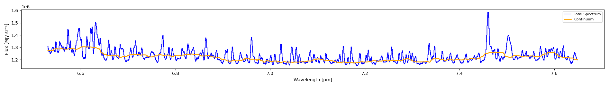
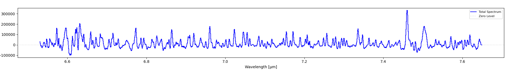

Continuum Subtraction
The continuum is the underlying stellar/background emission that spans the entire spectrum (as opposed to narrow spectral lines which are superimposed on top). Removing the continuum is essential for accurate line flux measurements.
Automatic Continuum Subtraction
IFU Analyzer includes an automatic continuum fitting algorithm that:
Detects emission/absorption peaks (spectral lines) in the spectrum
Fits a smooth curve through the remaining “line-free” pixels
Subtracts this fitted continuum from the spectrum
Via the GUI:
Click Continuum Tools in the toolbar
Click Automatic Continuum. Two buttons appear in a row under the toolbar: Fit Continuum and Subtract Continuum
Click Fit Continuum. The “Continuum Fitting Parameters” window opens. It has seven settings: Window Size (pixels), Sigma Threshold (σ), Minimum Peak Width, Minimum Peak Separation, Peak Exclusion Zone, Number of Iterations, and Smoothing Factor. Accept the defaults or change them, then click OK. The fitted continuum shows on the spectrum
Click Subtract Continuum. The spectrum updates to show the continuum-subtracted result
Click Subtract Continuum again to undo the subtraction. Click Fit Continuum again to remove the continuum line
The continuum is fitted and subtracted for the tab that is active (Full, Left Region, or Right Region). Each tab keeps its own continuum.
If you click Subtract Continuum before a continuum exists, the message “Click Fit Continuum first.” appears. If you switch between Automatic and Custom mode, the application asks you to confirm, because it clears the progress of the other mode.


The fitted continuum (orange) overlaid on the total spectrum (blue) before subtraction.


The same spectrum after subtraction – lines now sit on a flat, near-zero baseline instead of the sloped/varying continuum above.
Custom Continuum Subtraction
Use the custom mode when the automatic fit does not follow your continuum. You choose the points, and the application fits a cubic spline through them.
Via the GUI:
Click Continuum Tools, then Custom Continuum. A row of buttons appears: Custom Subtract, Delete Point, Save Points, Load Points, and OK
Click Custom Subtract. A window with instructions opens
Click on the spectrum to add continuum points. Each point snaps to the nearest data point. Choose places without emission or absorption lines. You need at least 3 points, and more points give a better fit
To remove a point, right-click its black marker. Or turn on Delete Point and left-click the marker
Click OK (or press ENTER) when you are done. The fitted continuum shows in orange, and the application asks “Subtract it from the spectrum?”. Click Yes to subtract. Press ESC to cancel
Click Custom Subtract again to undo the subtraction
If the keys do not work, click on the spectrum plot first.
Save Points writes the points to a text or CSV file (wavelength and flux). Load Points reads such a file into the current session. Use them to reuse the same points on another cube.
Save Continuum Cubes
Save Continuum Cubes (in the Continuum Tools group) fits the continuum at every pixel and writes two cubes. The two cubes always add up to the original cube.
Click Save Continuum Cubes
Choose the method:
Automatic: the application asks for the same seven settings as above
Custom: you place the points on the spectrum, as in the custom mode, and press OK. Only the wavelengths of the points are used. Each pixel gets a cubic spline through its own flux at those wavelengths
Choose a base file name. The application writes
<name>_continuum.fits(the continuum cube) and<name>_contsub.fits(the continuum-subtracted cube). If the files exist, it asks before it overwrites themA progress window shows the fit. Cancel stops it
Pixels that have data but get no continuum are NaN in both cubes. The completion message tells you how many.
Using the Continuum API
Fit and subtract continuum programmatically:
from cube_explorer.api import load_cube, fit_continuum
# Load data
cube = load_cube("data.fits")
spectrum = cube.spectrum
wavelength = cube.wavelength
# Fit continuum using automatic peak detection
continuum = fit_continuum(
wavelength,
spectrum,
sigma_threshold=2.0, # Peak detection sensitivity
peak_exclusion=3, # Pixels to exclude near peaks
iterations=2 # Iterative refinement
)
# Subtract to get line-only spectrum
line_spectrum = spectrum - continuum
print(f"Original spectrum range: {spectrum.min():.3f} to {spectrum.max():.3f}")
print(f"Line-only spectrum range: {line_spectrum.min():.3f} to {line_spectrum.max():.3f}")
Continuum Parameters
You can fine-tune the continuum fitting with these parameters:
continuum = fit_continuum(
wavelength,
spectrum,
window_size=51, # Window for median filter (must be odd)
sigma_threshold=2.0, # Prominence threshold in sigma
peak_width=1, # Minimum width of a peak, in pixels
peak_distance=3, # Minimum pixels between peaks
peak_exclusion=3, # Pixels excluded on each side of peak
iterations=2, # Number of refinement iterations
smoothing_factor=5 # Spline smoothing parameter
)
Higher sigma_threshold values are less aggressive (detect fewer lines).
Lower sigma_threshold values are more aggressive (detect more lines).
Saving continuum cubes
save_continuum_cubes does the same as the Save Continuum Cubes button. It needs an
if __name__ == "__main__": guard on Windows and macOS, because it uses several processes:
from cube_explorer.api import load_cube, save_continuum_cubes
if __name__ == "__main__":
cube = load_cube("data.fits")
# Automatic method (default parameters, or pass continuum_params={...})
n_failed = save_continuum_cubes(cube, "cube_continuum.fits", "cube_contsub.fits")
# Custom method: the wavelengths of the points that you would click in the GUI
n_failed = save_continuum_cubes(
cube, "cube_continuum.fits", "cube_contsub.fits",
anchor_wavelengths=[6.55, 6.70, 6.95, 7.20, 7.35])
The function returns the number of pixels that have data but got no continuum.
Tips for Better Continuum Fits
If too much continuum is being subtracted, increase
sigma_thresholdIf not enough continuum is being subtracted, decrease
sigma_thresholdFor noisy data, increase
iterationsfor more refinementAdjust
window_sizebased on the width of spectral features (wider features = larger window)